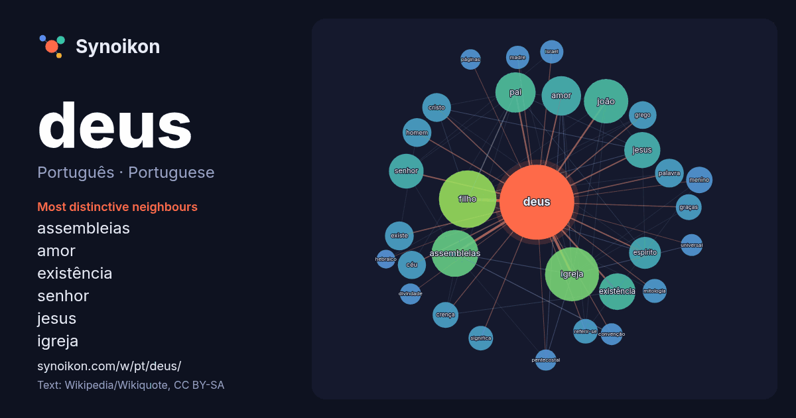

Português · Portuguese · popular word
deus
“god” · The words found around it in 1650 instances from Portuguese Wikipedia, Wikiquote.

Most distinctive neighbours
- assembleias 43×
- amor 28×
- existência 27×
- senhor 27×
- jesus 25×
- igreja 23×
- filho 21×
- espírito 21×
- céu 20×
- joão 20×
- referir-se 18×
- cristo 18×
- menino 18×
- crença 17×
- madre 17×
- mitologia 16×
- existe 16×
- grego 15×
- pentecostal 15×
- pai 14×
× = how many times more often than in general Portuguese Wikipedia text.
Most frequent neighbours
- filho 104
- igreja 92
- assembleias 69
- joão 62
- cidade 56
- pai 51
- amor 49
- existência 42
- jesus 41
- senhor 38
- brasil 37
- santo 33
- espírito 32
- cristo 26
- existe 26
- homem 26
- palavra 26
- céu 25
- reino 25
- grego 24
In context
- crença em Deus ou deuses. Alguns vêem a existência de Deus como uma questão empírica. Richard Dawkins afirma que “um universo com um deus seria um tipo Wikipedia snippets · Deus
- Igreja Universal do Reino de Deus (IURD), ou apenas Universal, é uma denominação cristã evangélica e neopentecostal protestante, com sede no Templo de Wikipedia snippets · Igreja Universal do Reino de Deus
- os que rejeitam a existência de deuses são chamados ateus. A discussão filosófica no ocidente da existência de Deus começou com Platão e Aristóteles Wikipedia snippets · Existência de Deus
- A Assembleia de Deus Vitória em Cristo é um ministério da Assembleia de Deus fundada em 1959, no Rio de Janeiro. A igreja possui atualmente mais de 100 Wikipedia snippets · Assembleia de Deus Vitória em Cristo
- de Deus (Em grego: βασιλεία τοῦ θεοῦ Basileia tou theou) designa um governo ou domínio em que tem Deus por soberano ou governante. O Reino de Deus é um Wikipedia snippets · Reino de Deus
- Islã coloca uma pesada ênfase na conceitualização de Deus como estritamente singular (tawhid). Deus é único (wahid) e inerentemente Um (ahad), misericordioso Wikipedia snippets · Deus no islamismo
- As Igrejas Evangélicas Assembleias de Deus, ou simplesmente Assembleia de Deus, constituem um conjunto de igrejas autônomas que, em comunhão doutrinária Wikipedia snippets · Assembleias de Deus no Brasil
- Cidade de Deus pode referir-se a: De Civitate Dei (conhecido em português como A Cidade de Deus) - livro escrito por Santo Agostinho. Cidade de Deus (Rio de Wikipedia snippets · Cidade de Deus
More Portuguese words
- arte
- ciência
- clima
- comida
- coração
- cão
- dinheiro
- família
- força
- gato
- história
- língua
- morte
- natureza
- ouro
- ponte
- saúde
- trabalho
- trem
- verdade
- vida
- água
Precomputed on 2026-10-09 with default settings (±5 words, medium corpus). The interactive map can refresh it with live data.